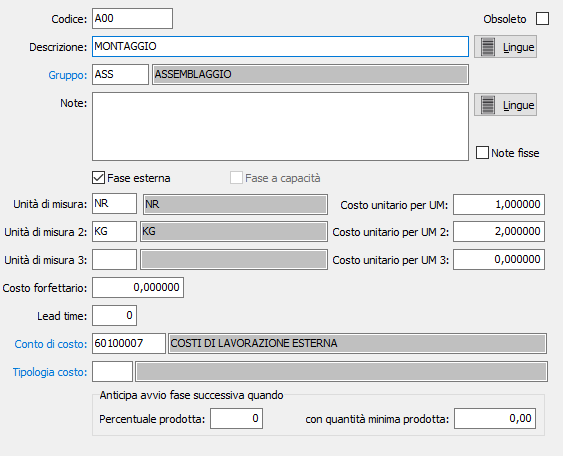

Fasi
La tabella consente di gestire i codice relativi alle fasi di lavorazione che comporranno i cicli di produzione delle schede tecniche.

Su ogni fase deve essere specificato il gruppo fasi che sarà utilizzato per accedere alle risorse valide per la fase stessa, l'indicazione di fase esterna (casella spuntata) se trattasi di una fase che prevede l'utilizzo di lavoranti esterni. Se per la fase il tempo non è proporzionale alla quantità unitaria ma legato ad una quantità specifica di prodotto spuntare la casella "Fase a capacità"; questa casella è modificabile fino a quando la fase non viene utilizzata in un ciclo con capacità diversa da 1.
Se attiva la gestione delle lingue tramite gli appositi pulsanti sarà possibile inserire le traduzioni di descrizione e note nelle lingue gestite.
Il campo Lead time non è utilizzato.
I costi per unità di misura vengono utilizzati solo per le fasi esterne come proposta durante l'inserimento della fase nel ciclo di produzione, il costo forfettario viene proposto anche per le fasi interne.
Il conto di costo e la tipologia di costo vengono utilizzati, per le fasi esterne, durante la creazione delle righe degli ordini terzisti e riportati sulle righe create; viene utilizzato il costo oppure il tipo costo a seconda della configurazione attiva.
Se presente il modulo di Schedulazione, saranno presenti i campi che consentono di configurare la sovrapposizione di fasi senza attendere la fine di ciascuna fase; l’entità dell’anticipo nell’avvio della fase successiva è definito a livello di ciclo e/o a livello di fase mediante l’indicazione di una percentuale sulla quantità prodotta con la possibilità di specificare eventualmente anche una quantità minima unitaria. Se le informazioni non vengono compilate (né per il ciclo né per la fase la sequenza di produzione è comunque FinishToStart (avvio la fase successiva al completamento della fase corrente).